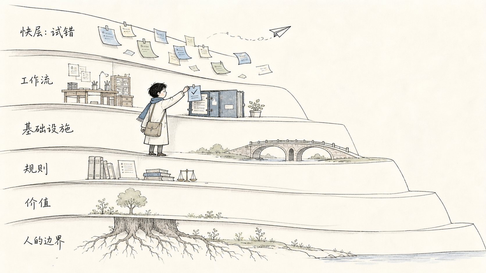
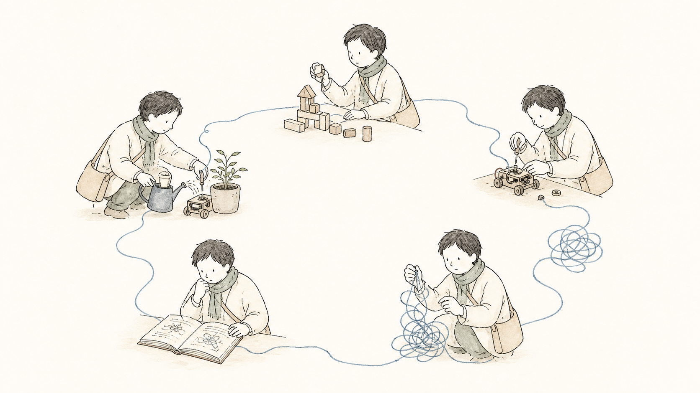
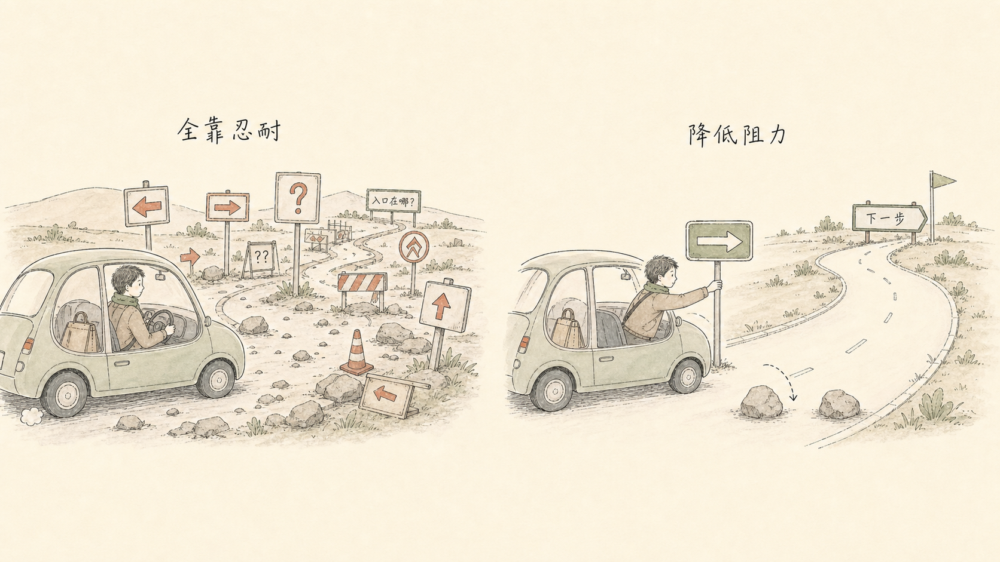

什么应该快，什么必须慢？
让模型和工具在快层竞争，把证据、标准和责任留在慢层。
三堂公开课 · 一条可继续延伸的学习路径
这里收录三堂真实公开课：一堂讲 Pace Layers 与个人 AI 系统，一堂讲从兴趣进入 AI 学习，一堂讲如何把坚持改造成可设计的行动系统。它们共同追问：如何让 AI 进入真实生活，又让学习和行动真正留下来？

三份课件看似分别谈技术、兴趣和意志力，底层却在处理同一个现实：当变化太快、目标太大、入口太难时，人如何把一次尝试变成下一次仍然可以复用的路径。
让模型和工具在快层竞争，把证据、标准和责任留在慢层。
从玩到做，在做中学，让真实问题为理论提供位置。
一次完成的小步和及时反馈，才会成为下一次行动的燃料。
把问题、证据、执行、验证、交付和复盘串成可复用路径。
每张课程卡片都对应原始 HTML 课件，并保留课件中的插图与素材。点击后可直接进入云端课件。
第一堂课处理“变化如何被承接”，第二堂课处理“学习如何开始并深入”，第三堂课处理“行动如何持续并变得更容易”。它们可以单独阅读，也可以按顺序走完。

三堂课都没有把改变归结为更强的自制力，而是把注意力放回层次、反馈、入口、验证和系统。
不要从“学会 AI”或“改变自己”开始，先找到一个真实、重复、低风险的问题。
把第一次行动缩小到今天可以完成，让进步在热情耗尽之前被看见。
把证据、验证、状态、交付和复盘留下来，工具可以变，职责不要丢。

后续新增公开课、案例或读书笔记，不需要重做主页。保留原始课件，提取真实主题和图片，登记目录，再挂入一个新的云端入口即可。